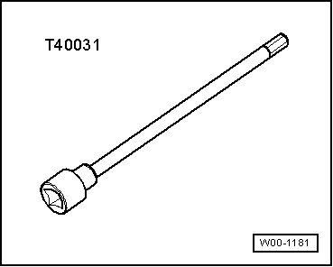
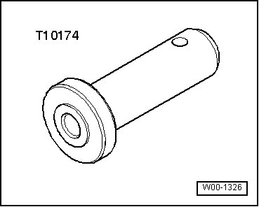
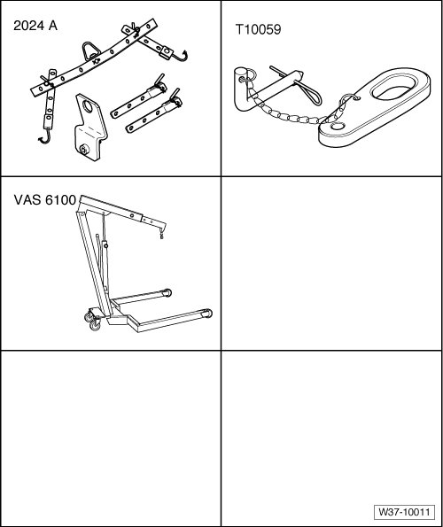
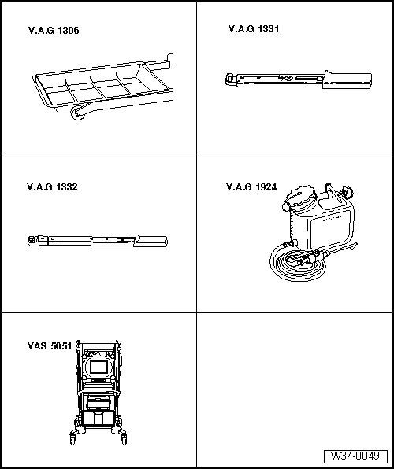
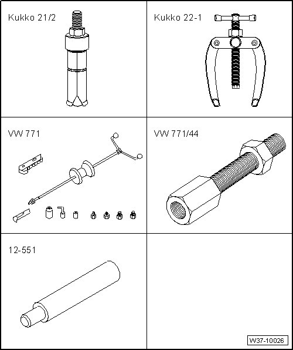
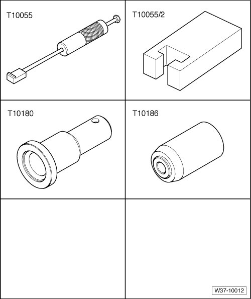

Control, Housing
Special Tools
Special tools, testers and auxiliary items required
• Vehicle diagnosis, testing and information system (VAS 5051B)
• Tester (VAS 5051/11A)
• Vehicle diagnosis and service system (VAS 5052)
• Diagnosis system (VAS 5053)
• Diagnostic cable, 3m with power supply (VAS 5051/1) or
• Diagnostic cable, 5m without power supply (VAS 5051/3)
• Socket and key (T40031)

• Thrust piece (T10174)

• Torque wrench (VAG 1783)


Special tools, testers and auxiliary items required
• Lifting tackle (2024 A)
• Shackle (T10059)
• Workshop crane (VAS 6100)

Special tools, testers and auxiliary items required
• Drip tray (VAG 1306)
• Torque wrench (VAG 1331)
• Torque wrench (VAG 1332)
• ATF filler tool (VAG 1924)
• ATF filler tube (VAG 1924/1)
• Vehicle diagnostic, testing, and information system (VAS 5051)

Special tools, testers and auxiliary items required
• commercially available internal puller Kukko 21/2
• commercially available counter support Kukko 22-1
• Adapter from the Slide hammer - complete det (VW 771)
• Adapter (VW771/44)
• Centering mandrel (12 - 551)

Special tools, testers and auxiliary items required
• Puller (T10055)
• Adapter (T10055/2)
• Sleeve (T10180)
• Thrust piece (T10186)